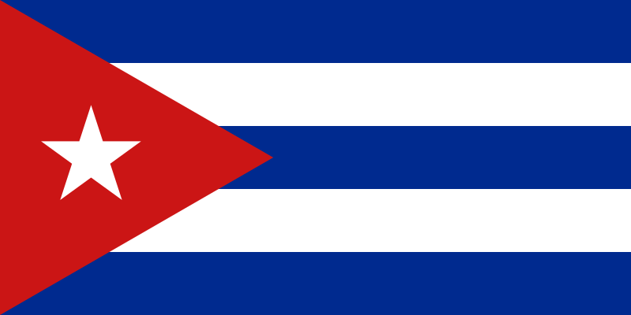

Cuba

Map of Cuba

Top 10 Geographic Locations
Top 5 Historical Highligths
- The Unsuccesful 10 Years War
- The Secret Cold War Program that Flew Cuban Children into the US
- The Invasion that could´ve Changed the History of a Country
- The Closest the World was about to a End
- The Protest for Freedom